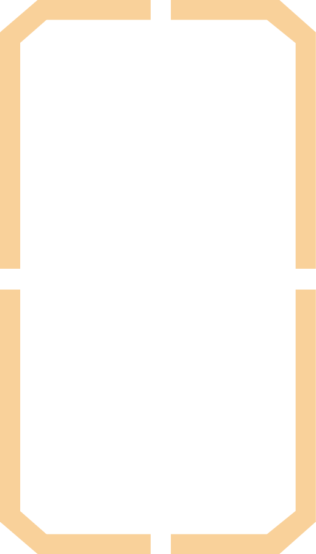
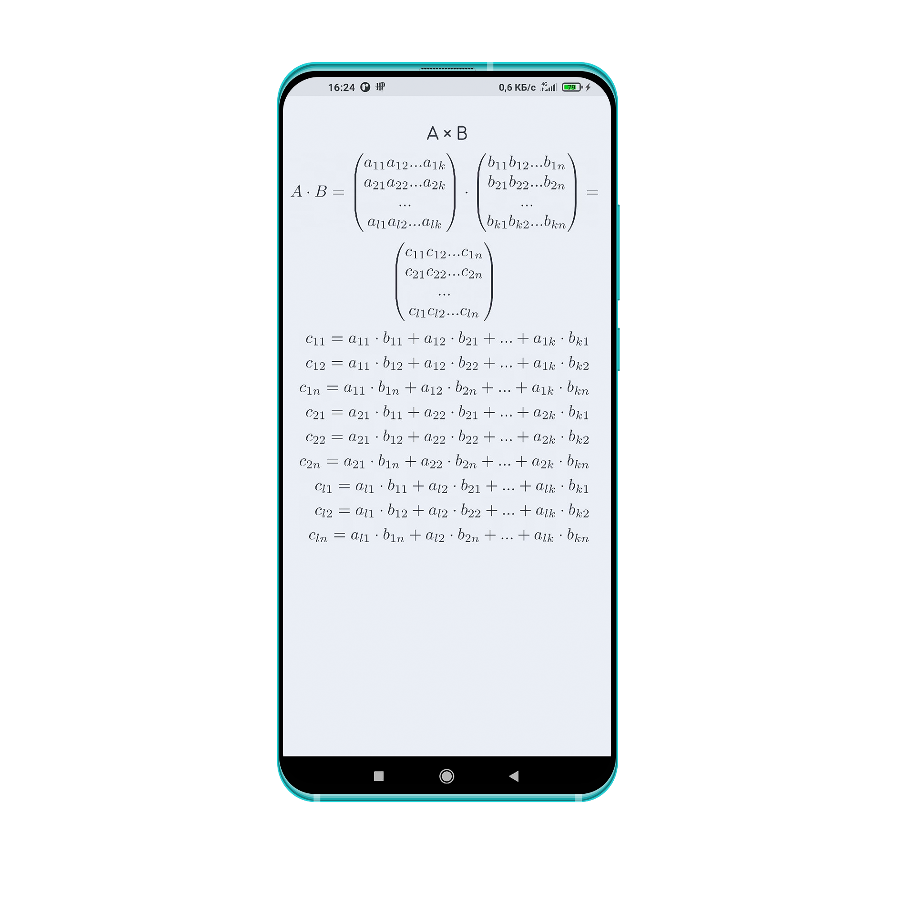
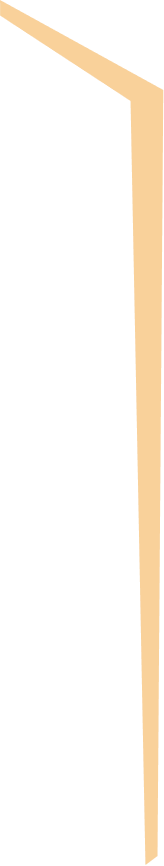
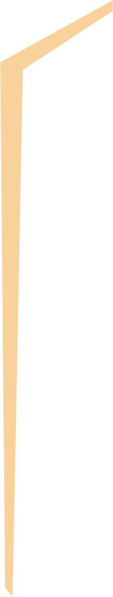
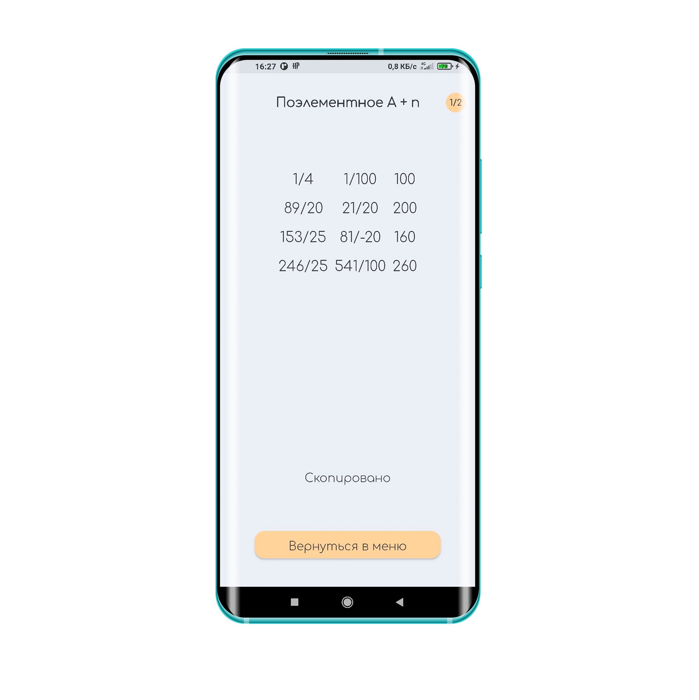
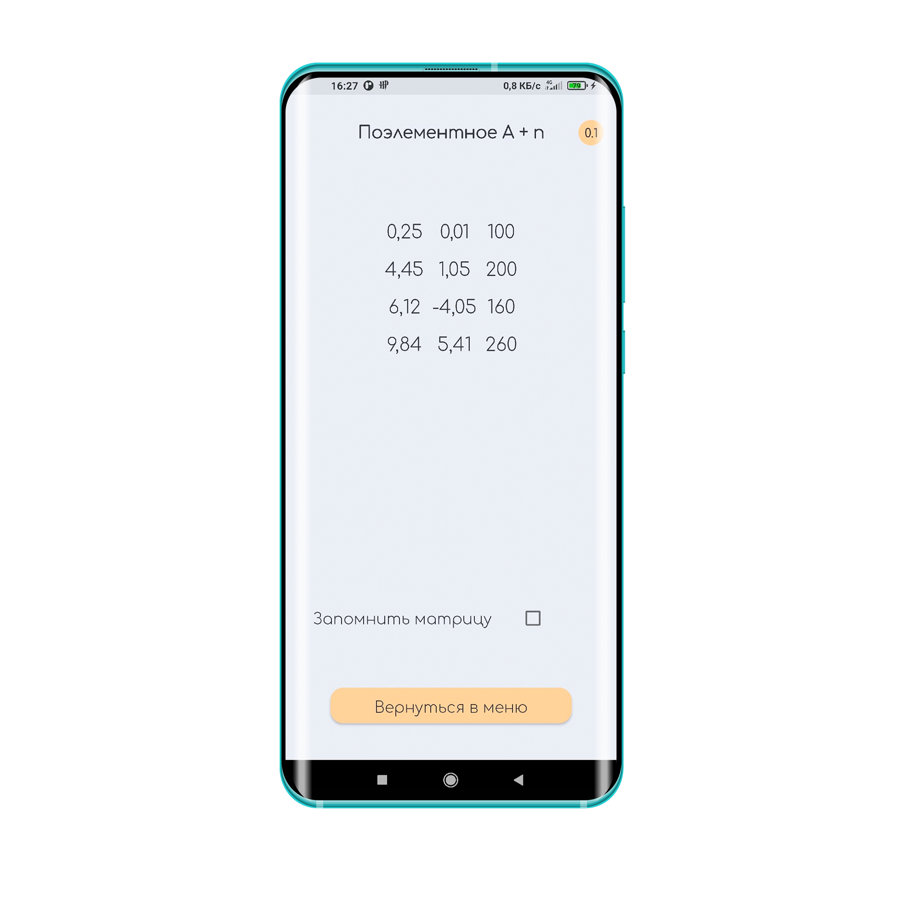
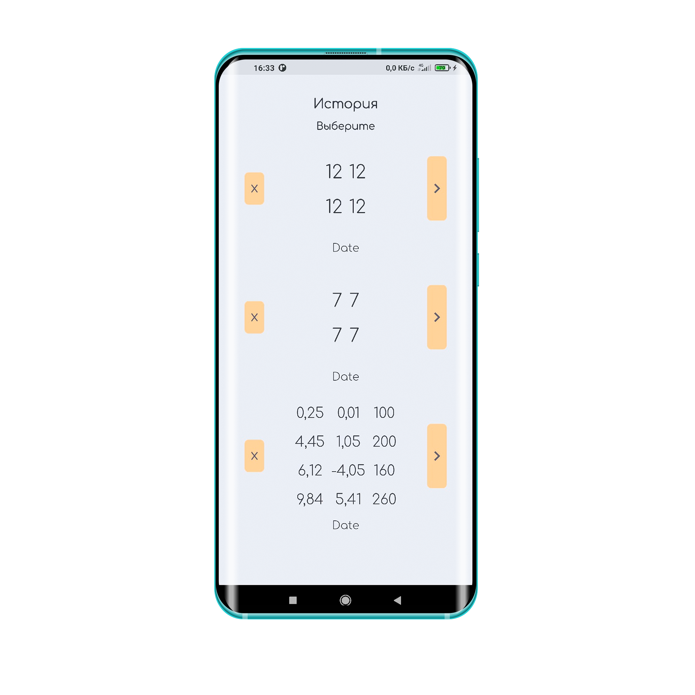

Мы собрали большое количество материалов по подготовке к контрольным и экзаменам по линейной алгебре, включающее в себя алгоритм решения типичных задач, краткое описание применимости и обзор смежных определений.




Вы можете делать промежуточные вычисления, после чего переходить обратно к исходным данным при помощи истории.
Если в процессе работы будет выбрано недопустимая матрица или значение, то наша система оповещения предупредит вас и предотвратит ошибку.
